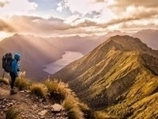
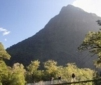
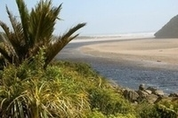

Hiking New Zealand
Kepler Track
 "Opened in 1988, the track was carefully planned to show walkers all the best features of Fiordland - moss-draped beech forest, prolific bird life, tussock high country, huge mountain ranges, cascading waterfalls, vast glacier-carved valleys, luxuriant river flats and limestone formations. The track’s construction makes for easier walking. Most streams are bridged, boardwalks cover boggy areas and the very steep sections have steps. Walk the Kepler and you’ll see everything that’s marvelous about this exquisite corner of the world." Retrieved from https://www.newzealand.com/us/feature/kepler-track/ on September 27, 2021
{kind=link}
Milford Track
 "Around 100 years ago, in an article that appeared in the London Spectator, the poet Blanche Baughan declared the Milford Track to be ‘the finest walk in the world’. Arguably New Zealand’s most famous walk, the 53-kilometre journey begins at the head of Lake Te Anau, and leads you across suspension bridges, board walks and a mountain pass. The Milford Track will show you pristine lakes, sky-scraping mountain peaks and enormous valley views; and it will take you to feel the misty breath of Sutherland Falls, the tallest waterfall in New Zealand. On a sunny day it is postcard perfect but some walkers say that only when it rains, and torrents of water cascade down the steep mountainsides, have you truly experienced the magic of the Milford Track." Retrieved from https://www.newzealand.com/ie/feature/milford-track/ on September 27, 2021
{kind=link}
Heaphy Track
 "Of all the Great Walks, the Heaphy Track delivers the strongest contrasts. Every section of the track is vastly different from the previous one. Choose to hike this track and you’ll get luxuriant rainforest; sub-alpine tussock grasslands; high, rugged mountains; and, finally, lowland forest and palm-fringed surf beaches. You’re in for 82 kilometres of hard walking, but the frequent scenery changes will certainly take your mind off sore feet. The track is staged within the Kahurangi National Park, the second largest national park in the country and home to many Great Spotted Kiwi Birds. Even to a non-geologist, Kahurangi’s rocks are deeply interesting. Parts of the region are limestone or marble; these areas are characterised by an abundance of caves, bluffs, natural arches, sinkholes and water-worn outcrops. The park also contains the largest cave system in New Zealand. The path followed by the Heaphy Track was first used by Maori pounamu hunters travelling from Golden Bay to the pounamu (jade) rivers of Westland. Pounamu was highly valued for tools, weapons and ornaments." Retrieved from https://www.newzealand.com/ie/feature/heaphy-track/ on September 27, 2021
{kind=link}